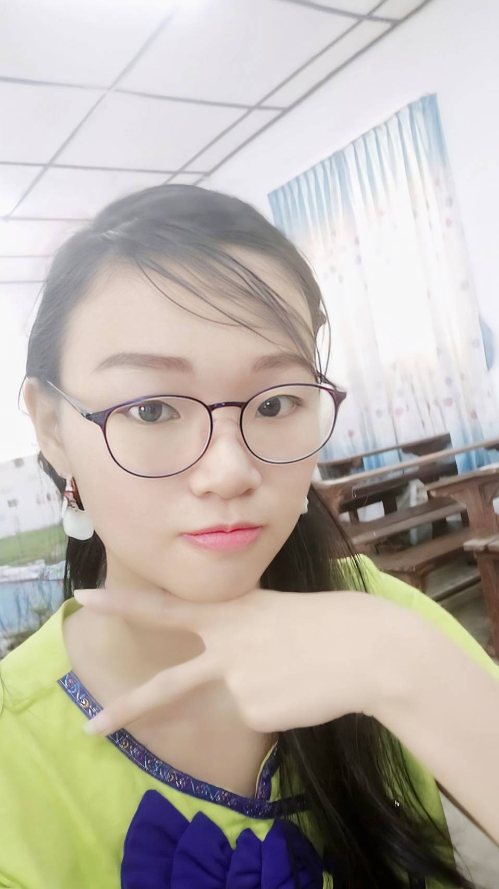

Introduction 

My name is Cyrano Cheng, and I’m currently a first-year student majoring in Information Management at Asia
Eastern University of Science and Technology. I live in Banqiao District, New Taipei City.
In my free time, I enjoy listening to music, reading novels, playing games and sometimes crochet—especially
when I can relax with
a nice cup of bubble tea, my favorite! I’m excited to learn more about technology and data in my major,
and I’m looking forward to meeting new friends and exploring different opportunities during my time here.